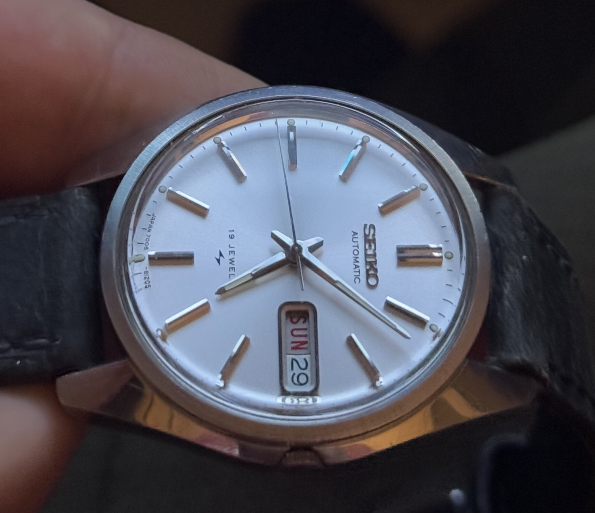
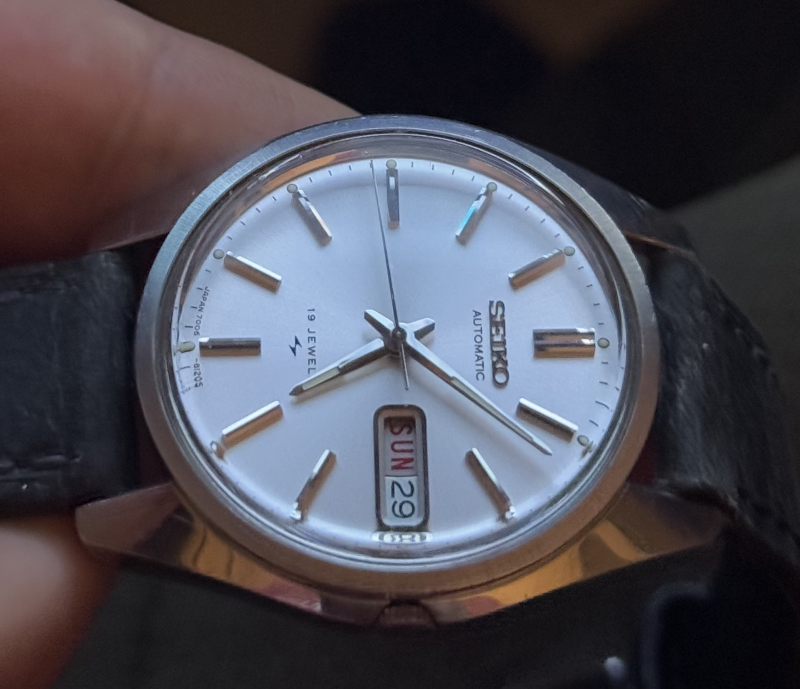

Vintage Seiko watches are cherished for their durability, timeless design, and rich history. Restoring these timeless pieces is not only about bringing them back to life but also preserving their legacy. In this guide, I will walk you through the essential steps of restoring a vintage Seiko watch to its former glory.
Step 1: Check with the seller if the watch runs
Usually, this is already mentioned in the description. If the watch works, you are already off to a good start. However, ask the seller about the condition of the movement and whether it is functioning properly. Sometimes watches are advertised as "not working" due to a simple issue that can be easily fixed.
Step 2: Check the value online for a fair bid
Using Google Lens and the caseback number, you can quickly find pricing information. Keep in mind that vintage pieces vary in price based on the condition of the watch, completeness of the set (box/papers), and rarity. For now, we focus on the watch itself, and both eBay and Chrono24 are reasonable price indicators. However, be cautious as Chrono24 sometimes shows inflated prices due to included services.
Google reverse image search
Step 3: Receiving the watch
When the watch arrives, the first thing you should do is check if it runs. For automatic watches, gently shake it to see if the movement is activated. For hand-wound watches, simply wind it. If the time and date functions work, you have already found a rough gem!
Step 4: Polishing the crystal
90% of vintage Seiko watches feature mineral crystals, which can be polished with simple toothpaste. Apply a small pea-sized amount of toothpaste to a cloth and gently rub it onto the crystal in circular motions. Avoid applying too much pressure. Then, wipe off the paste with a damp cloth and check your progress. Be careful not to get any moisture near the crown or movement.
Step 5: Polishing the case
If the Seiko's case has visible scratches, you can polish it as well. Use a mild polish and a microfiber cloth. Avoid aggressive polishing as it may damage the finish. Light polishing can bring out the beauty of a vintage Seiko watch!
Step 6: Polishing the bracelet
For this you can use a simple dishwashing sponge with the green abrasive part. Get something straight, like a piece of wood, and align your sponge next to it (do this to the bracelet alone and when removed from the watch). Rub the bracelet in the direction of the grain of the finish. Avoid aggressive polishing as it may damage the finish. Light polishing can bring out the beauty of a vintage Seiko watch!
The end result
 

As you can see, the watches look more alive due to a clear crystal. The bracelet on the black Seiko still has some scratches but looks much cleaner. I think I only did about 5 strokes with the sponge following the existing grain.